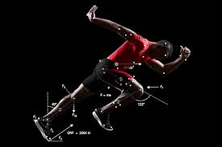
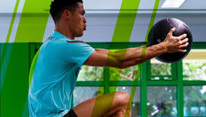

Sports Medicine & Performance
Key areas where understanding muscle function impacts athletic training, injury management, and performance.

Biomechanics & Movement Analysis
Using technology like motion capture and force plates to analyze athletic movements (running, jumping, throwing) helps identify technique flaws, muscle imbalances, and factors contributing to potential injury.

Injury Prevention & Conditioning
Targeted strength and conditioning programs, proper warm-ups, flexibility work, and careful load management are crucial for preparing muscles for the demands of sport and reducing common injuries like strains and sprains.

Performance Optimization & Recovery
Applying principles of muscle physiology, nutrition, hydration, and recovery techniques (massage, cryotherapy, sleep) helps athletes adapt to training, perform at their peak, and minimize fatigue.